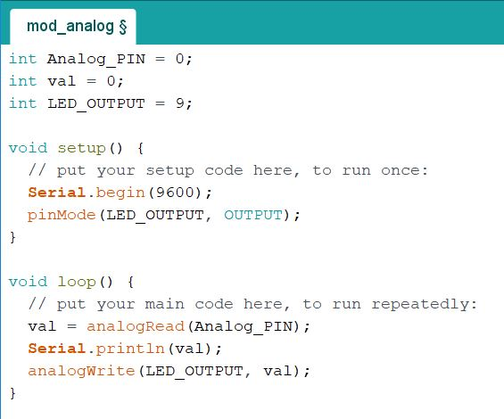
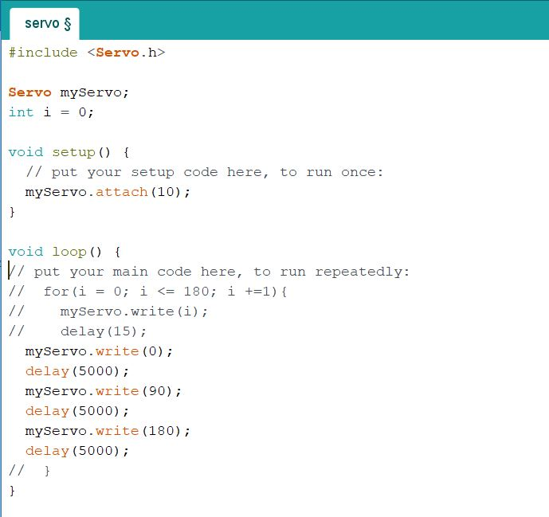
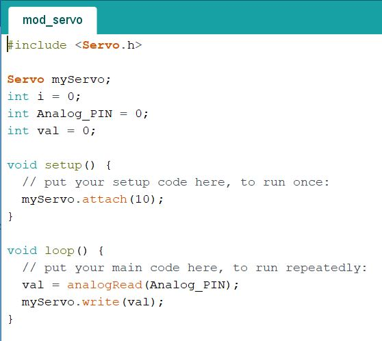
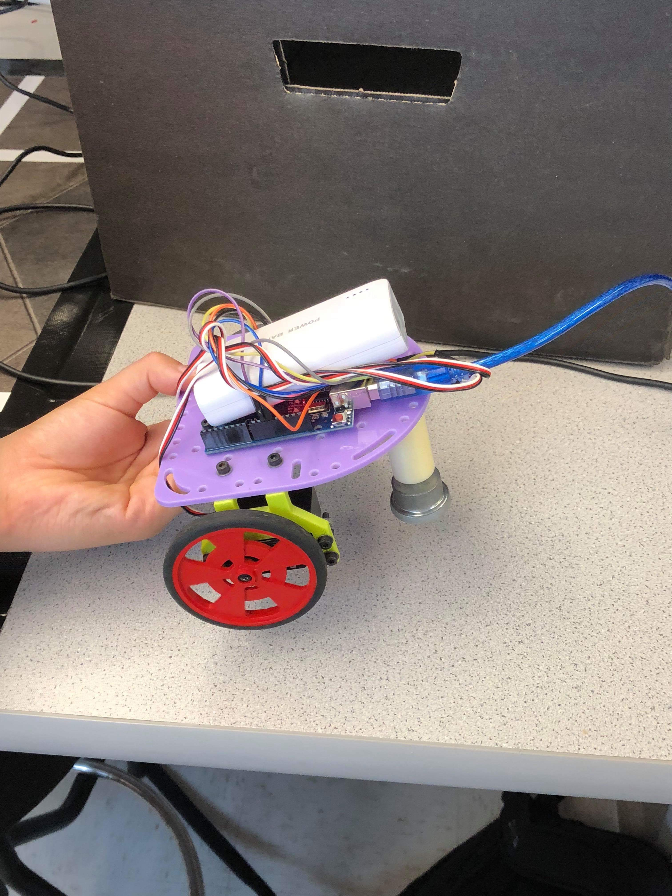
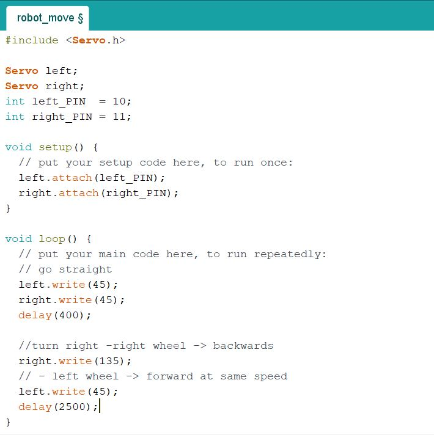

Debrief
• Team met for first time, created Github repository and associated site. • Learned basic Arduino Uno programming involving LEDs, potentiometers, and Servos hooked to the device’s digital pins.• Built a basic two-wheeled robot and programmed it to travel in a straight line and turn (robot followed different trace paths)
Materials
• Arduino Uno • USB A/B cable • Continuous rotation servos • LED (green) • 1 Potentiometer • Several 330 ohm resistors • 1 Solderless breadboardBlink
Our first task was to get acquainted with the Arduino Uno boards. With the Arduino software (equipped with a suitable USB driver), we could upload short programs written in the Arduino reference language to the board.
We started with the simple example program to get the built in Arduino LED to blink on and off. The example program can be found in the Arduino IDE under File > Examples > 1. Basics > Blink
Modified Blink
Our second task was to modified the Blink program to instead blink an external LED that we installed in one of the Arduino’s digital pins (in series with a ~300Ω resistor). This also allowed us to successively test the digital pins to ensure all were functional. We continued installing resistors in series for the subsequent tests to make sure the board was not overflowing with a current it could not handle.

Working With Analog Outputs
Next, we set up a potentiometer (variable resistor) in the Arduino’s analog pins and made sure we could read its value from our computer interface. We could then use this value to our advantage by feeding it back as an input into other devices and manually adjusting it to change the device’s effect.

Modified Analog Outputs
We then modified our code to test the potentiometer with an external LED where the potentiometer value determines the LED brightness. Though our code checked out and we were getting a modifiable result from the potentiometer, we realized the LED was not lighting up because our series resistor was much too high (300kΩ instead of 300Ω). Fixing this, we clearly saw the LED’s brightness change as a function of the potentiometer resistance.
Parallax Servos
Following this, we began to work with servos. The servos we used could rotate clockwise or counterclockwise at varying speeds depending on the input integer we programmed into it. An integer value of 0 caused it to spin one way at full speed, 90 made it stop, and 180 caused it to spin at full speed the opposite way, with every value in between corresponding to intermediate speeds in the appropriate direction.
Modified Parallax Servos
We then modified our code to link the servo to the potentiometer value so we could manually adjust the servo's rotation.
Assembling Our Robot
Our final step was to apply all this in building a basic robot. We first collected an assortment of the available pieces, including a chassis, 3D printed mounts for the wheels, two wheels connected to servos, and a ball bearing on a mount for stabilization. Piecing these together with screws and bolts, we created a bona fide tripedal robot with dual wheeled propulsion.
Attaching the Arduino to the top of the chassis, we programmed our instructions into the robot to have it travel in a square. This meant we had to program the robot to travel in a straight line as well as turn 45 degrees. To achieve the former, we simply had to program the servos to spin in the same direction at the same speed. To get the robot to turn, we programmed one wheel to continue spinning forward while the other remained stagnant. In this case, a square being a closed form shape, it was always the same wheel running and the same one staying stagnant when turning. Once the program was uploaded, we connected the servo to a battery pack and successfully had it move, albeit not in a square. We had to adjust the time delays on its turns and its straight travel to make a more compact, efficient shape; the trace ended up being close to hexagonal, but we confirmed we had the methodology to make our robot run correctly.
